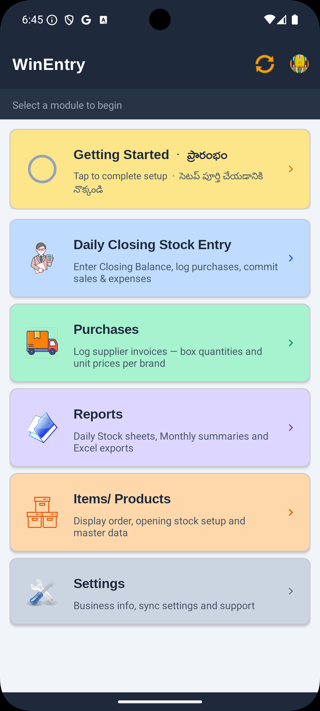
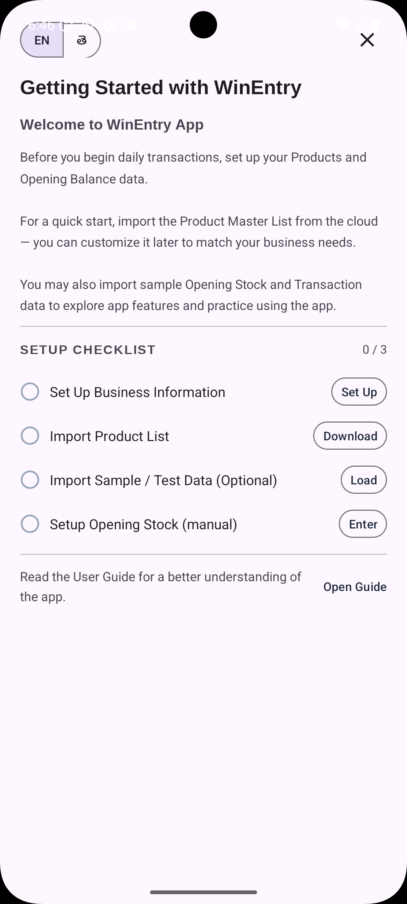

1 About WinEntry
Originally designed and engineered by Simhadri Systems to meet the rigorous daily stock reconciliation requirements of licensed retail wine and liquor businesses in Telugu states, WinEntry is a robust, versatile inventory management tool suitable for any retail business that relies on precise, unit-based stock tracking.
What the App Does
WinEntry automates the essential daily reconciliation process — the "opening vs. closing" balance — that is critical for high-volume retail environments.
- Unit-Level Tracking — Manage inventory across multiple brands, categories and varied sizes (bottles, cases, packets, bags, and so on)
- Daily Reconciliation — Log daily purchases, sales and expenses to generate instant, accurate daily stock balance sheets
- Calculated Sales — Opening Balance + Purchases − Closing Balance = Daily Sale, computed automatically for every product and size
- Multilingual Interface — Currently supports English and Telugu; can be localised to any other Indian language with minimal technical changes
- Privacy-First Design — Operates fully offline by default to keep your business data local, with optional secure cloud backup for multi-device syncing
- Excel Export — Every report and record can be exported to Excel for audits, accounting, regulatory submission or data backup
Why It's Valuable
Built by the industry, for the industry. Born from the unique needs of retail licensees, WinEntry is offered as a collaborative tool. Since licensees operate in exclusive geographic zones, the app serves as a professional-grade solution shared among peers to foster a community of feedback and continuous improvement.
Eliminates human error. By replacing tedious manual paper entries with automated digital logging, the app significantly reduces the risk of mathematical errors and financial discrepancies.
Highly customizable. While it excels in the licensed retail trade, the underlying logic is code-neutral. It can be adapted to any retail sector — such as Dairy, Hardware or Cosmetics — without requiring code changes.
Business Use Cases
| Sector | Example Use |
|---|---|
| Licensed retailer (current deployment) | Bottles by brand and pack size — daily reconciliation and generation of daily account reports for regulatory compliance |
| Dairy & Beverage | Crates and individual bottles with high daily turnover |
| Construction & Hardware | Bags of cement, boxes of tiles, plumbing fixtures |
| Personal Care & Cosmetics | Multiple brands across SKU sizes (ml / grams) |
| Pet Supply | Packaged food bags and accessories by unit |
Size Codes (current retail deployment)
The app supports up to five size variants per product. In the current licensed retail configuration these are:
| Size Code | Description | Typical Volume | Units per Case |
|---|---|---|---|
| Full / Big | 551–900 ml (usually 750 ml or 650 ml Beer) | 12 per case | |
| QQ + "L" | Litre | 1000 ml (by suffixing "L" to the brand code) | 9 per case |
| PP | Half / Pint | 201–550 ml (usually 375 ml or Can Beer) | 24 per case |
| NN | Quarter / Nip | 101–200 ml (usually 180 ml) | 48 per case |
| DD | Dip / Miniature | ≤ 100 ml (usually 90 ml or 60 ml) | 96 per case |
For other business types, size codes and their descriptions are configured when the app is set up for that deployment.
2 Installing the App
- Open Google Play Store on your Android phone
- Search for WinEntry or WinEntry Simple Inventory
- Tap the result published by Simhadri Systems → tap Install
- Once installed, tap Open
Requirements: Android 8.0 (Oreo) or later · A Google account for sign-in


3 Signing In
WinEntry uses your Google account to sign in — the same account you use for Gmail or YouTube.
- Open WinEntry — the Sign In screen appears
- Tap Sign in with Google
- Select your Google account from the list (or add a new one if prompted)
- Grant the permissions requested — the app needs Sheets access only for optional cloud backup
- You will be taken to the Home screen


4 Getting Started — First-Time Setup
When you open the app after signing in for the first time, an amber Getting Started card appears at the top of the Home screen. Tap this card to open the setup checklist.


The checklist has 4 steps. Steps 1 and 2 are required. You must also complete either Step 3 or Step 4 before the card disappears and you can begin daily trading.
Step 1 — Business Info
Your business name and owner details appear as the header on all exported reports and on the Home screen.
- Tap Set Up next to "Set Up Business Information" — opens the Business Info screen
- Fill in the fields:
- Owner Name — your full name
- Business Name (required) — name of your business or shop
- Licence / Reg. No — registration or licence number (stored locally, never shared with admin)
- Address Lines 1 & 2, Location — shop address and area
- Phone — 10-digit mobile number
- Tap Save & Register
- A confirmation dialog explains what fields are shared with the admin. Tap Save & Register to confirm.


After saving, a green tick appears on Step 1 in the checklist. Future edits use the button label "Save & Update Registration".
Step 2 — Import Product List
Downloads the admin's standard product master list (product codes, names, sizes and prices) to your phone.
- Tap Download next to "Import Product List"
- A progress spinner appears — wait 5–30 seconds depending on connection speed
- Once complete, a green tick appears


After downloading, go to Items/Products → Product Display Order to arrange products in the order you count your stock. This makes daily closing entry faster.
The order you set here is reflected consistently throughout the app — Daily Stock Entry, Opening Stock, and all reports show products in exactly this sequence. To reorder: tap Product Display Order, switch on Edit, then drag rows using the handle on the left, or tap the ↑ ↓ nudge arrows beside each product. Tap Renumber & Save when done. Double-tap any product row (with Edit switched off) to deactivate it — deactivated products move to an Inactive section at the bottom and are hidden from daily stock entry.
Step 3 — Load Sample Data (Optional)
Sample data lets you practise using the app before entering real figures. It loads dummy opening stock and a few days of transactions so you can see how every screen looks with actual data.
- Tap Load next to "Import Sample / Test Data (Optional)"
- A date picker opens — select the date you want as the opening balance date for the sample data. Default is 7 days ago.
- Tap OK — sample data loads in the background (10–30 seconds)


Once loaded, a green tick appears and the card shows "Trial setup complete — you're all set!"
Step 4 — Setup Opening Stock
If you are starting with real data (not sample data), you need to enter the actual unit count per product and size as your starting inventory. This is done once when you first go live. There are two ways to do it — choose whichever suits you.
Enter directly on screen — best for smaller product lists.
- Tap Enter next to "Setup Opening Stock (manual)"
- The Opening Stock Setup screen opens
- Select your first trading date at the top
- For each product, tap the size fields and type the unit count you have on hand
- Use the keyboard Next key to move between size fields and products quickly
- Tap SAVE at the bottom — a confirmation shows the total unit count before you confirm


Faster for large product lists — if you already have your opening stock figures in a spreadsheet.
- Tap Enter next to "Setup Opening Stock (manual)" to open the Opening Stock Setup screen
- Tap ⋮ (top-right menu) → Download Template
- The app saves a pre-filled Excel file to your phone's Downloads folder. The template has one row per product with columns for each size (L, QQ, PP, NN, DD). Product codes are already filled in — do not change them.
- Open the template on a computer or on your phone in Google Sheets / Microsoft Excel
- Enter your opening stock counts in the quantity columns for each product and size. Leave a cell blank or enter 0 if you have none of that size.
- Save the file and transfer it back to your phone (via WhatsApp, Google Drive, email or USB)
- Back in the Opening Stock Setup screen, tap ⋮ → Import from Excel
- Select the saved file from your phone's storage
- The app imports the figures and shows an import result summary (see Section 12 for details)


Once saved (by either method), a green tick appears on Step 4 and the Getting Started card disappears automatically when all required steps are complete.
5 Home Screen
After setup, the Home screen shows five module cards.

Header (top bar)
| Element | What it does |
|---|---|
| Business name + location | Displayed at top — from Business Info |
| Cloud/Sync icon 🔄 (top-right) | Tap to manually push data to cloud. White = all synced; Red = sync errors, tap to retry; Amber = Drive Backup not set up |
| Account icon | Shows your Google profile photo when signed in. Tap to see account email or sign out |
Module Cards
| Card | What it does |
|---|---|
| Daily Closing Stock Entry | Enter today's closing unit count and commit day-end totals |
| Purchases | Record supplier delivery invoices with reference number, quantities and prices |
| Reports | View and export daily, period and monthly reports to Excel |
| Items / Products | Manage product list, display order and opening stock |
| Settings | Business info, language, cloud backup, sync settings and support |
Tap any card to open the module. Use the back arrow (top-left inside the module) or the phone's back button to return to Home.
6 Daily Stock Entry
This is the core daily workflow. At end of day, count the units on your shelves and enter the closing balance. The app calculates daily sales automatically.
Opening Balance + Purchases − Closing Balance = Daily Sale
Opening the Screen
Tap Daily Closing Stock Entry from the Home screen.


Top controls:
- Date selector — defaults to today. Use the ‹ and › arrows or tap the date to pick a different date.
- CB Entry / View Only toggle — switches between edit mode and read-only view. Default is View Only.
Entering Closing Balances
- Tap CB Entry in the top bar to enter edit mode
- The product list appears with a column per configured size
- Each row shows the Opening Balance (OB) and Purchases (PQ) already filled in
- Tap a Closing Balance field and type the unit count you physically counted
- Sale quantity (SQ) is shown instantly: SQ = OB + PQ − CB
- Tap the Save button (green checkmark in toolbar) when all products are entered


Importing Closing Balances from Excel
If you have a large number of products, or if your closing stock is already recorded in a spreadsheet, you can import it directly rather than typing each figure into the app.
- In the Daily Stock screen, tap ⋮ (top-right) → Download Closing Template
- The app saves a pre-filled Excel file to your Downloads folder. The template has one row per product with columns for each size (L, QQ, PP, NN, DD) and one column for the date. Product codes and names are already filled — do not change them.
- Open the template on a computer or in Google Sheets / Microsoft Excel
- Enter the closing balance counts for each product and size. Leave a cell blank or enter 0 if you have none of that size.
- Set the date column to the trading date you are entering for.
- Save the file and transfer it back to your phone (via WhatsApp, Google Drive, email or USB)
- Back in the Daily Stock screen, tap ⋮ → Import Closing
- Select the file from your phone's storage
- The app imports the closing balances and shows an import result summary (see Section 12)


Day-End Reconciliation
After entering closing balances, scroll to the bottom of the list to complete the day-end summary:
- Total Day Sales — calculated automatically from all products and their prices
- UPI Receipts — total UPI and digital payment collections for the day (₹)
- Day Expenses — any petty cash expenses paid that day
- Cash for Deposit — calculated as Sales − UPI − Expenses (shown in red if negative)
- Cash Deposit — amount physically deposited in the bank
- Notes — any remarks for the day
Tap Save at the bottom of the reconciliation section to lock the day-end summary.

Daily Stock Menu (⋮ top-right)
| Menu item | What it does |
|---|---|
| Export Daily Stock | Export the full stock sheet as Excel |
| Export Current Date | Export only today's data as Excel |
| Export Date Range | Export a range of dates as Excel |
| Download Closing Template | Download a pre-filled Excel template for bulk CB entry |
| Import Closing | Import closing balances from an Excel file |
| Restore from Cloud | Pull daily stock data down from your cloud workspace |
| Clear Current Date | Delete all entries for the selected date only |
| Clear ALL Daily Stock | Delete all daily stock data (requires typing "DELETE ALL" to confirm) |
Search
Tap the search icon in the toolbar to filter products by name or product code while in the daily stock screen.
Unsaved Changes
If you navigate away or switch dates with unsaved changes, the app asks: Save Now / Discard / Keep Editing. Your data is safe until you explicitly discard it.
7 Purchases
Record every supplier delivery invoice here. Purchases are automatically included in the daily stock calculation for the purchase date.
Purchases List
Tap Purchases from the Home screen to see all recorded invoices.


- Each row shows: date, invoice reference number, supplier name and total cost
- Tap a row to view the full invoice details
- Tap + (top-right toolbar) to add a new purchase
- Use the search bar at the top to filter by product name, product code, date or invoice number
Recording a Purchase
Tap + to open the Purchase Entry form.
Invoice details (top)
- Invoice No — the supplier's invoice number from the delivery document
- Reference No — a unique reference for this delivery (e.g. a permit or transport number) used to prevent duplicate imports
- Supplier — select from the dropdown or type manually
- Date — date goods were received (defaults to today)
- Notes — optional remarks
Product details (bottom)
- Tap Select Product to choose the product from the list
- For each size received, enter:
- Cases — number of full sealed cases
- Loose — individual loose units (partial case)
- Price — price per unit (auto-filled from product master if set)
- Total units = (Cases × units per case) + Loose, and Cost = Total × Price — calculated automatically
- Tap Add Another Product to add more products to the same invoice
- Tap Save when done
Editing or Deleting a Purchase
Double-tap any purchase in the list to open an action dialog with Edit, Delete, or Insert Here options. Deletions are permanent and immediately update the daily stock totals for that date.
Adding Multiple Items from the Same Invoice
In the purchases list, double-tap an existing purchase and select Insert Here. This opens a new purchase form pre-filled with the same invoice number, date and supplier — just change the product.
Importing Purchases from Excel
When you receive a delivery with many products, or when entering historical invoices in bulk, importing from Excel is far faster than tapping through each product one by one.
- In the Purchases screen, tap ⋮ (top-right) → Download Template
- The app saves a pre-filled Excel template to your Downloads folder. The template has one row per product line with columns for: Date, Invoice No, Reference No, Supplier, Product Code, and quantity/price columns per size (Cases, Loose, Price for each of L, QQ, PP, NN, DD).
- Open the template on a computer or in Google Sheets / Microsoft Excel
- Fill in one row per product line of each invoice:
- Enter the delivery Date (format: DD-MM-YYYY or YYYY-MM-DD)
- Enter the Invoice No and Reference No from the delivery document
- Enter the Supplier name
- The Product Code column already lists your products — find the right row
- Enter Cases (full sealed cases) and Loose (individual loose units) for each size received
- Enter the Price per unit for each size
- Repeat rows for each product. Multiple invoices can be entered in the same file — just use a different Invoice No per delivery.
- Save the file and transfer it to your phone (via WhatsApp, Google Drive, email or USB)
- Back in the Purchases screen, tap ⋮ → Import from Excel
- Select the file from your phone's storage
- The app imports all rows and shows an import result summary (see Section 12)
Purchases Menu (⋮ top-right)
| Menu item | What it does |
|---|---|
| Import from Excel | Bulk-import purchases from an Excel file (download template first) |
| Export All | Export all purchase records as Excel |
| Export Filtered | Export purchases within a date range |
| Download Template | Get an Excel template pre-filled with your product list |
| Delete by Date Range | Delete all purchases within a chosen date range |
| Multi-Select | Select multiple purchases to delete in one go |
| Download from Cloud | Pull purchase data from your cloud workspace |
8 Reports
Tap Reports from the Home screen.
Daily Stock Sheet
Full table: opening balance, purchases, closing balance and calculated sales for all products and sizes on a selected date.
- Tap Daily Stock Sheet
- Select the date
- Tap View Report
- Business name, owner name and date appear as the report header (from Business Info)
- Tap Export to Excel (top-right) to save the sheet to Downloads
Closing Balances
End-of-day stock quantities per product across all sizes on a selected date. Useful for a quick physical stock verification.
Daily Brand Wise Account
A daily account summarising sales and stock per brand, grouped by product category. Useful for regulatory reporting where required by your business type.
- Tap Daily Brand Wise A/c
- Select the date
- Tap View Report
- Export to Excel as needed
Purchase Report (Period)
All purchase records within a date range, grouped by invoice — useful for supplier-wise or invoice-wise reconciliation.
- Tap Purchase Report
- Select From and To dates
- Tap View Report
Monthly Sale Data
Shows the day-end commit totals (sale amount, UPI receipts, expenses, cash deposit) for each day in a selected month — for monthly reconciliation and accounts.
- Tap Monthly Sale Data
- Navigate months using the ◀ and ▶ arrows, or tap the month name to jump to any month/year
Days with no saved day-end reconciliation are highlighted in amber with a * marker. Days where closing balances were updated after reconciliation are marked with a refresh icon (stale — consider re-committing those days for accuracy). Column totals appear at the bottom; cash amounts shown in red if negative.
| Monthly Summary Menu (⋮) | What it does |
|---|---|
| Share | Share the report as a colour-coded HTML file |
| Print / Save as PDF | Print or save using your phone's print service |
| Import Reconciliation from Cloud | Pull day-end data from your cloud workspace |
| Delete Reconciliation Range | Remove day-end records for a date range |
Monthly Stock Purchases
Total purchase quantities per product for a selected month, one row per product.
Include Zero-Activity Products
In the report filter, toggle "Include products with zero activity" to show products with no sales or purchases on the selected date. Off by default to keep reports compact.
9 Items / Products
Tap Items / Products from the Home screen.
Product Display Order
Controls the order products appear in the Daily Stock Entry screen and in reports.
- Tap Product Display Order
- Toggle the Edit switch to enter edit mode
- Long-press and drag any product to move it up or down
- Double-tap a product row (Edit switch off) for options to Deactivate (hides it from daily stock — moves it to an Inactive section at the bottom). Double-tap an inactive product to Re-activate it.
- Tap Renumber & Save when done, or Discard to cancel
Opening Stock Setup
Used when starting a new period or correcting starting quantities. Opening stock can be entered manually or imported from Excel — see Section 4 — Step 4 for the full walkthrough of both methods.
- Tap Opening Stock Setup
- Select the date and tap Begin Entry (new) or Edit (to correct existing)
- Enter unit counts per size for each product using the keyboard
- Tap SAVE at the bottom
- Tap Opening Stock Setup → ⋮ → Download Template
- Fill in your stock quantities in the template on a computer
- Transfer the file back to your phone
- Tap ⋮ → Import from Excel and select the file
See Section 4 — Step 4 for the complete step-by-step import walkthrough. The bottom bar shows sync status and buttons to Upload to Cloud or Restore from Cloud.
Product Master Data
Displays your full product list — product codes, names and size variants — for reference.
Download Standard Product List
Downloads the latest product master from the admin's cloud workspace. Run this whenever the admin adds new products or updates prices.
- Tap Download Standard Product List
- Confirm the download
- Wait for completion — new and updated products are added; your display order is preserved
10 Settings
Tap Settings from the Home screen.
Language
Tap App Language to switch between English and తెలుగు. The change applies immediately to all screens. You can also switch language from the Getting Started dialog's EN / తె toggle.
Business Info
Update your business name, owner name, address and phone. All fields are the same as in Step 1 of the Getting Started setup.
- Tap Save & Update Registration to sync changes to the admin's system
Business Info overflow menu (⋮ top-right)
| Your Status | Menu Option | What it does |
|---|---|---|
| Registered | Delete Account & Data | Removes all cloud data, registration and sign-in account permanently |
| Not registered | Clear Local Data | Deletes all inventory data from this device (exported Excel files are not affected) |
| Deletion pending | Complete Account Deletion | Finishes removing the sign-in account after re-login |
Drive Backup
Shows the current state of cloud backup. See Section 11 for the full workflow.
Sync Settings
Available only when Drive Backup is active. Configure whether the app syncs automatically every 6 hours or only when you tap the Sync button on the Home screen.
Help & Support
- Report an Issue / Ask for Help — sends a support email with device and app version pre-filled
- Request Feature — sends a feature request to Simhadri Systems
- Import Test Data — reloads sample data (requires registration)
- User Guide — opens this guide in the browser
Error Log
When the app encounters technical errors, a log is saved on the device. If errors exist, a Share Error Log button appears at the bottom of Settings. Share the log when contacting support, or tap Clear to remove it.
App Version
Shown at the bottom of Settings. Tap Check for Update to check for a newer version on the Play Store.
11 Cloud Drive Backup
Cloud backup is optional. The app works fully offline without it. When enabled, your daily stock, purchases and day-end summaries are stored in a private Google Sheet in the admin's Drive workspace — separate from your personal Drive.
How to Enable
- Register — Go to Settings → Business Info, fill in your business name and tap Save & Register
- Request workspace — Go to Settings → tap the Drive Backup card → tap Request Drive Backup
- Read the consent terms — the dialog explains what data is stored and that the admin has read access to your records
- Tap I Agree — Enable Backup
- The app contacts the admin's system:
- If your account is in the invited list → workspace is created immediately → "Drive Backup Active" shows in green
- If not yet in the invited list → "Drive Backup Pending" shows — the admin will activate your workspace
What Is Synced
| Data | Synced? |
|---|---|
| Daily stock entries | Yes |
| Purchase records | Yes |
| Day-end reconciliation | Yes |
| Opening stock | Yes |
| Product list | Read-only download from admin |
| Licence/Reg. number, full address | Never — stays on device only |
Sync Status Icons on Home Screen
| Icon Colour | Meaning |
|---|---|
| White | All records synced successfully |
| Red | One or more records failed — tap to retry |
| Amber / Yellow | Drive Backup not set up |
Tap the sync icon on the Home screen at any time to trigger an immediate manual sync.
Viewer vs Editor Role
The administrator assigns each account a role. Most users are Editors.
| Role | What you can do |
|---|---|
| Editor (default) | Full access — enter data, sync up and down, all buttons active |
| Viewer | Read-only — sync down from cloud only; data entry and save buttons are hidden |
Contact the admin if you need your role changed.
Deactivating or Deleting
- Deactivate — Go to Settings → Drive Backup (active) → Deactivate. Stops future auto-sync. Local data and Excel exports are not affected.
- Delete Account & Data — Go to Settings → Business Info → ⋮ → Delete Account & Data. Permanently removes all cloud data, your registration and your sign-in account.
12 Data Management & Excel Import/Export
WinEntry can both export data to Excel for records and reports, and import data from Excel to avoid manual typing. All import and export operations use standard .xlsx files that open in Microsoft Excel, Google Sheets or any compatible spreadsheet app.
Excel Export — Quick Reference
Exported files are saved to the phone's Downloads folder. After export, a Share button lets you send the file directly via WhatsApp, email or any other app.
| What to export | Where to find it | Notes |
|---|---|---|
| Daily stock full sheet | Daily Stock → ⋮ → Export Daily Stock | All products, all sizes, for a selected date |
| Closing balances (single date) | Daily Stock → ⋮ → Export Current Date | Useful for a snapshot of end-of-day stock |
| Daily stock (date range) | Daily Stock → ⋮ → Export Date Range | Select From and To dates |
| All purchases | Purchases → ⋮ → Export All | Every invoice ever recorded |
| Purchases (date range) | Purchases → ⋮ → Export Filtered | Select From and To dates |
| Monthly summary | Reports → Monthly Sale Data → ⋮ → Share | Colour-coded HTML or PDF via Print |
Excel Import — How It Works
The import system follows the same three-step pattern for every data type:
Always start by downloading the template from within the app. The template is pre-filled with your product codes and column headings in the exact format the app expects. Never create an import file from scratch — use the template.
Open the template on a computer or phone (Google Sheets, Microsoft Excel). Enter your data in the quantity/value columns. Do not change product codes, column headings or sheet structure. Save as .xlsx.
Transfer the filled file back to your phone (WhatsApp, Google Drive, email attachment or USB cable). In the app, tap ⋮ → the relevant Import option, then select the file. The app validates each row before committing.
Excel Import — Quick Reference
| What to import | Template location | Import location |
|---|---|---|
| Opening stock | Products → Opening Stock → ⋮ → Download Template | Products → Opening Stock → ⋮ → Import from Excel |
| Closing balances | Daily Stock → ⋮ → Download Closing Template | Daily Stock → ⋮ → Import Closing |
| Purchases | Purchases → ⋮ → Download Template | Purchases → ⋮ → Import from Excel |
- Opening stock import — Section 4 (Step 4, Option B) and Section 9
- Closing balance import — Section 6 (Importing Closing Balances from Excel)
- Purchase import — Section 7 (Importing Purchases from Excel)
Import Result Summary
After any import, the app shows a result dialog with a count for each outcome:
| Result | Meaning |
|---|---|
| New | Records imported successfully |
| Skipped | Already exist — same product + date, or same invoice + date. No change made. |
| Failed | Product code not found in your product list, or data format error |
Tap Copy List to copy the full list of skipped or failed rows to clipboard. Paste into a notes app or email to review and correct the figures before retrying.
13 Help and Support
Go to Settings → Help & Support
Support email: simhadrisystems@gmail.com
Contact Support
Tap Ask for Help or Report Issue. The app pre-fills a message template with your app version, Android version and device model — you choose what additional details to add. No data is sent automatically.
Common Issues
| Problem | What to do |
|---|---|
| "Request Access" appears instead of "Download" in onboarding | Your account needs to be activated by the admin — tap "Request Access" to send the request |
| "Drive Backup Pending" for more than a day | Tap the card → Send Reminder |
| Sync icon is red on Home screen | Check internet connection, then tap the sync icon to retry |
| Opening balance looks wrong | Check if the previous day was committed — open that date in Daily Stock and verify the closing balance was saved |
| Product missing from the daily stock list | Items/Products → Download Standard Product List to get the latest list from admin |
| "Account Not Activated" when downloading products | Admin needs to add your account — contact admin by email or WhatsApp |
| App shows "Sign in again to complete" after account deletion | Sign out, sign back in with the same account, then go to Business Info → ⋮ → Complete Account Deletion |
Import Test Data
Go to Settings → Help & Support → Import Test Data. Loads a sample set of opening balances and dummy stock data for practice. Requires app registration (Step 1 in onboarding).
Select the date you want as the sample opening balance day, then confirm the import. Replace sample data with your real figures when you are ready to begin live trading.